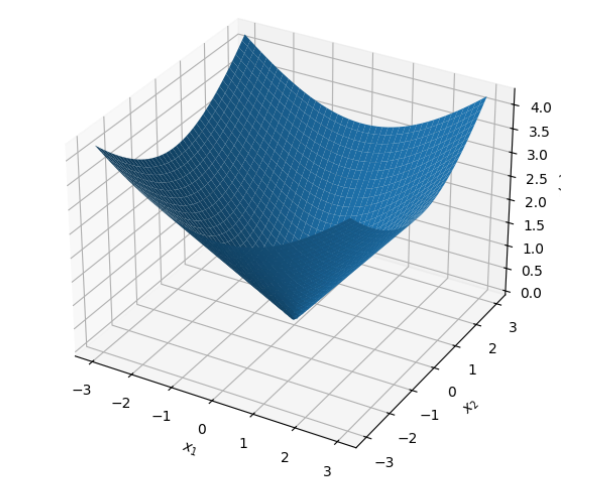
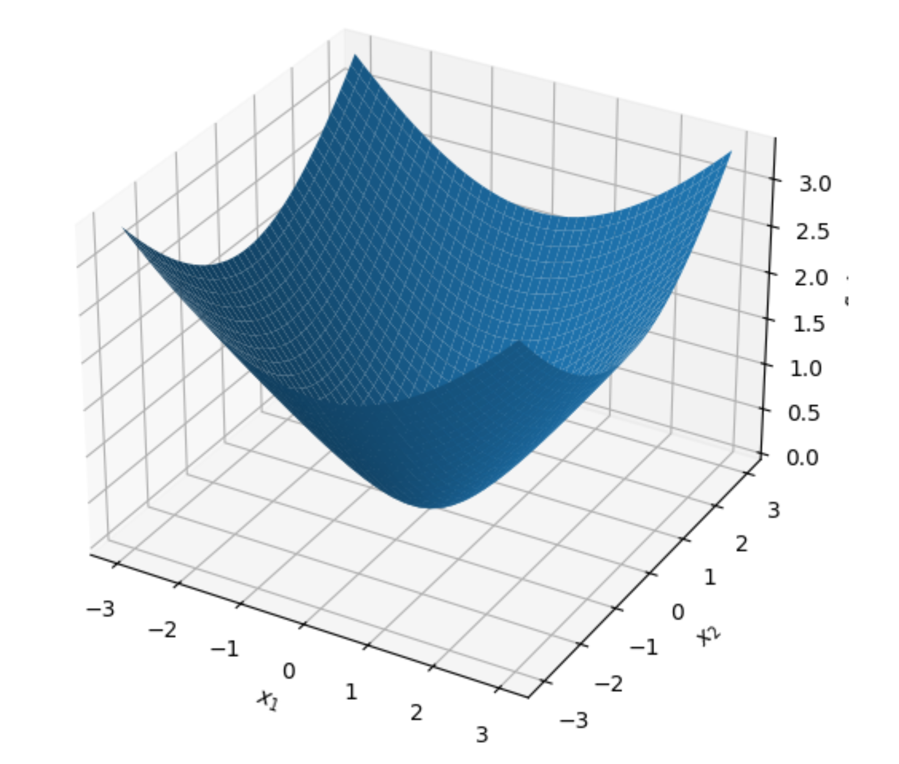

들어가며 (Introduction)
머신러닝과 통계학, 계량경제학의 수많은 문제(예: Lasso 회귀의 \(L_1\) 정규화, SVM의 Hinge Loss 등)는 비매끄러운(Nonsmooth) 목적 함수를 포함하고 있습니다. 이러한 비매끄러운 볼록 최적화(Nonsmooth Convex Optimization) 문제는 전통적인 Subgradient Descent를 사용할 경우 수렴 속도가 \(O(1/\sqrt{T})\)로 매우 느리다는 치명적인 단점이 있습니다.
이러한 한계를 극복하기 위한 강력한 수학적 기법이 바로 평활화 근사(Smooth Approximation)입니다. 본 포스트에서는 미분 불가능한 함수를 미분 가능한 부드러운 함수로 근사하는 방법, 이를 통해 Nesterov의 가속 기울기 하강법(Accelerated Gradient Descent)을 적용하여 \(O(1/T)\)의 빠른 수렴 속도를 달성하는 과정, 그리고 최적화 이론의 근간이 되는 Fenchel 켤레(Fenchel Conjugate)와 Moreau 분해(Moreau Decomposition)의 개념과 증명 과정을 상세히 다룹니다.
1. 평활화 근사 (Smooth Approximation)
1.1. \((p, q)\)-평활화 가능 함수 (Smoothable Function)의 정의
어떤 볼록 함수 \(f\)가 미분 불가능한 뾰족한 점(Kink)을 가지고 있더라도, 우리가 임의의 오차 범위 내에서 이를 부드러운 함수로 근사할 수 있다면 최적화가 훨씬 수월해집니다. 이를 수학적으로 다음과 같이 정의합니다.
볼록 함수 \(f\)가 다음 조건을 만족할 때, \((p, q)\)-smoothable 하다고 정의합니다:
- 임의의 \(\mu > 0\)에 대하여, 다음 두 가지 조건을 만족하는 볼록 함수 \(f_\mu\)가 존재해야 합니다.
- \(f_\mu\)는 \((p/\mu)\)-smooth 함수입니다. (즉, \(\nabla f_\mu\)가 \(p/\mu\)-Lipschitz 연속임을 의미합니다.)
- 모든 \(x\)에 대하여 다음 부등식을 만족해야 합니다. \[f_\mu(x) \le f(x) \le f_\mu(x) + q\mu\]
위 정의의 직관적인 의미는 매개변수 \(\mu\)를 작게 만들수록 \(f_\mu\)는 원래 함수 \(f\)에 극도로 가까워지지만(오차 \(q\mu\) 감소), 그 대가로 함수의 곡률 혹은 그래디언트의 변화율 제한(Smoothness constant \(p/\mu\))은 커진다는 트레이드오프를 보여줍니다.
1.2. Example 1: \(L_1\) 노름 (Norm)
- 가장 대표적인 비매끄러운 함수인 \(L_1\) 노름 \(f(x) = |x|\)를 평활화해 보겠습니다. 이를 위해 머신러닝의 Robust Regression에서도 자주 쓰이는 Huber 함수 \(L_\mu(z)\)를 도입합니다.
\[ L_\mu(z) = \begin{cases} \frac{z^2}{2\mu}, & \text{if } |z| \le \mu \\ |z| - \frac{\mu}{2}, & \text{otherwise} \end{cases} \]
[평활화 조건 증명]
- 오차 바운드(Approximation Bound):
- \(|z| \le \mu\)일 때: \(L_\mu(z) = \frac{z^2}{2\mu}\). 여기서 \(\frac{z^2}{2\mu} \le \frac{\mu|z|}{2\mu} = \frac{|z|}{2} \le |z|\) 이며, \(|z| - L_\mu(z) = |z| - \frac{z^2}{2\mu} \le \frac{\mu}{2}\) (완전제곱식 유도에 의해 최대치 도달).
- \(|z| > \mu\)일 때: \(L_\mu(z) = |z| - \frac{\mu}{2}\). 따라서 \(|z| - L_\mu(z) = \frac{\mu}{2}\).
- 결론적으로 모든 \(z\)에 대해 \(L_\mu(z) \le |z| \le L_\mu(z) + \frac{\mu}{2}\)가 성립합니다.
- Smoothness: - \(L_\mu(z)\)의 도함수는 구간 경계에서 연속이며 기울기의 최대 변화율은 원점 부근의 이차함수 영역에서 발생하며 그 값은 \(1/\mu\)입니다.
- 따라서 \(L_\mu\)는 \((1/\mu)\)-smooth 합니다.
- 이로써 1차원 절댓값 함수 \(|\cdot|\)는 \((1, 1/2)\)-smoothable 함을 알 수 있습니다.
[다차원 공간으로의 확장]
- \(x \in \mathbb{R}^d\)일 때 \(f(x) = \|x\|_1 = \sum_{i=1}^d |x_i|\) 입니다. 이에 대한 평활화 함수를 \(f_\mu(x) = \sum_{i=1}^d L_\mu(x_i)\)로 정의하면:
- \(f_\mu\)는 여전히 각 축에 독립적이므로 \((1/\mu)\)-smooth 합니다.
- 각 차원마다 최대 \(\frac{\mu}{2}\)의 오차가 발생하므로, 전체 오차는 \(\frac{d\mu}{2}\)가 됩니다.
- \(\therefore\) 부등식 \(f_\mu(x) \le \|x\|_1 \le f_\mu(x) + \frac{d\mu}{2}\)가 성립하며, \(\| \cdot \|_1\)은 \((1, d/2)\)-smoothable 합니다.

1.3. Example 2: \(L_2\) 노름 (Norm)
- \(g(x) = \|x\|_2\) 역시 원점 \(x=0\)에서 뾰족한 원추(Cone) 형태를 띠어 미분 불가능합니다. 이를 부드럽게 만들기 위해 다음과 같은 쌍곡선 형태의 함수를 도입합니다.
\[f_\mu(x) = \sqrt{\|x\|_2^2 + \mu^2} - \mu\]
[평활화 조건 증명]
- 오차 바운드 (Approximation Bound):
- 삼각부등식 혹은 단순 대수 비교를 통해 \(\sqrt{\|x\|_2^2 + \mu^2} \le \|x\|_2 + \mu\) 임을 알 수 있습니다. (양변 제곱시 우변에 \(2\mu\|x\|_2 \ge 0\) 항이 남음)
- 또한 \(\sqrt{\|x\|_2^2 + \mu^2} \ge \|x\|_2\) 임은 자명합니다.
- 따라서 부등식 \(f_\mu(x) \le \|x\|_2 \le f_\mu(x) + \mu\) 가 성립합니다.
- Smoothness (Hessian 바운드 도출):
- 1차 미분 (Gradient): \(\nabla f_\mu(x) = \frac{x}{\sqrt{\|x\|_2^2 + \mu^2}}\)
- 2차 미분 (Hessian): 몫의 미분법을 적용합니다. \[\nabla^2 f_\mu(x) = \frac{1}{\sqrt{\|x\|_2^2 + \mu^2}}I - \frac{1}{(\|x\|_2^2 + \mu^2)^{3/2}} x x^\top\]
- Hessian 행렬이 양의 정부호(Positive Definite)임과 동시에 상한을 구해보면, 뒤의 항이 \(x x^\top\) 형태의 Rank-1 행렬이므로 언제나 빼주는 효과를 가집니다. 즉, \[\nabla^2 f_\mu(x) \preceq \frac{1}{\sqrt{\|x\|_2^2 + \mu^2}}I \preceq \frac{1}{\sqrt{\mu^2}}I = \frac{1}{\mu}I\]
- Hessian의 최대 고윳값이 \(1/\mu\) 이하이므로 \(f_\mu\)는 \((1/\mu)\)-smooth 합니다.
- 결과적으로 \(\|\cdot\|_2\)는 \((1, 1)\)-smoothable 합니다. (\(L_1\) 노름과 달리 차원 \(d\)가 오차 상수에 곱해지지 않는다는 강력한 이점이 있습니다.)

1.4. Lipschitz 함수의 Moreau-Yosida 평활화
- 일반적인 \(L\)-Lipschitz 볼록 함수 \(f\)에 대해서도 계통적인 평활화 방법이 존재합니다. 임의의 \(\eta > 0\)에 대하여 Moreau-Yosida 평활화(Moreau Envelope) \(f_\eta(x)\)를 다음과 같이 정의합니다.
\[f_\eta(x) := \inf_u \left\{ f(u) + \frac{1}{2\eta}\|u - x\|_2^2 \right\}\]
- 이 함수는 본래 함수를 아래로 볼록한 이차 함수들을 이용해 ’인프 컨볼루션(Inf-convolution)’한 결과물입니다.
- Smoothness: \(f_\eta\)는 도함수로 \(\nabla f_\eta(x) = \frac{1}{\eta}(x - \text{prox}_{\eta f}(x))\)를 가지며, Proximal 연산자의 비팽창성(Non-expansiveness)에 의해 \((1/\eta)\)-smooth 속성을 갖습니다.
- 오차 바운드 (강의 자료 빈칸 보충): - 상한: \(u=x\)를 대입하면 \(f_\eta(x) \le f(x) + 0 = f(x)\)가 되어 쉽게 도출됩니다.
- 하한: \(u^*\)가 위 infimum의 해라고 할 때, \(f\)가 \(L\)-Lipschitz 이므로 \(f(x) - f(u^*) \le L\|x - u^*\|\)가 성립합니다. \[f_\eta(x) = f(u^*) + \frac{1}{2\eta}\|u^* - x\|_2^2 \ge f(x) - L\|u^* - x\|_2 + \frac{1}{2\eta}\|u^* - x\|_2^2\]
- 우변의 식은 \(\|u^* - x\|_2\)에 대한 이차방정식으로 볼 수 있으며, 최솟값은 \(\|u^* - x\|_2 = \eta L\)일 때 발생하고, 그 최솟값은 \(f(x) - \frac{\eta L^2}{2}\)가 됩니다.
- 따라서, \(f(x) - \frac{\eta L^2}{2} \le f_\eta(x) \implies f_\eta(x) \le f(x) \le f_\eta(x) + \frac{L^2}{2}\eta\) 가 성립합니다.
- 하한: \(u^*\)가 위 infimum의 해라고 할 때, \(f\)가 \(L\)-Lipschitz 이므로 \(f(x) - f(u^*) \le L\|x - u^*\|\)가 성립합니다. \[f_\eta(x) = f(u^*) + \frac{1}{2\eta}\|u^* - x\|_2^2 \ge f(x) - L\|u^* - x\|_2 + \frac{1}{2\eta}\|u^* - x\|_2^2\]
- 결과적으로 임의의 \(L\)-Lipschitz 함수는 위 연산을 통해 \((1, L^2/2)\)-smoothable 하다는 것을 증명할 수 있습니다.
2. 비매끄러운 함수의 평활화 기반 최적화 (Smooth Optimization)
2.1. 문제 정의 및 근사 알고리즘
- 우리가 풀고자 하는 목적 함수가 다음과 같다고 가정합시다. \[\min_{x} \quad g(x) + h(x)\]
- 여기서 \(g\)는 볼록하면서 \((p, q)\)-smoothable 한 함수이고, \(h\)는 단순한(proximal 연산이 쉬운) 볼록 함수입니다.
- 직접 이 문제를 푸는 대신, 앞서 배운 \(g_\mu(x)\)로 치환한 근사(approximate) 문제를 정의합니다. \[\min_{x} \quad F_\mu(x) := g_\mu(x) + h(x)\]
- 이때 \(g_\mu\)는 \((p/\mu)\)-smooth 함수이므로, 우리는 기존의 Subgradient 메서드 대신 Nesterov’s Accelerated Gradient Descent (FISTA 등)를 이 문제에 바로 적용할 수 있습니다.
2.2. 수렴 속도와 최적의 \(\mu\) 설정 (강의 12페이지 빈칸 보충)
- Nesterov 가속 기울기 하강법을 \(T-1\)번 반복하여 얻은 출력값을 \(x_T\)라고 합시다. 정리(Theorem)에 따르면, 근사 문제에 대한 수렴 바운드는 다음과 같습니다. (여기서 \(R = \|x_1 - x^*\|_2\)로 둡니다.)
\[g(x_T) + h(x_T) - \min_x \{g(x) + h(x)\} \le q\mu + \frac{p}{\mu T^2} \|x_1 - x^*\|_2^2\]
- 이 식의 우변은 두 항의 합으로 이루어져 있습니다.
- \(q\mu\): 평활화 근사로 인해 본질적으로 발생한 구조적 오차입니다.
- \(\frac{p}{\mu T^2} R^2\): 최적화 알고리즘이 목표치에 수렴하지 못해 남은 최적화 오차입니다. \(\mu\)가 작을수록 함수가 더 뾰족해져(그래디언트 상수가 커져) 수렴이 느려집니다.
[최적의 평활화 파라미터 \(\mu^*\) 도출 과정]
오차 상한을 최소화하는 최적의 \(\mu\)를 찾기 위해 우변의 식을 \(\mu\)에 대해 미분하여 0으로 둡니다. \[\frac{\partial}{\partial \mu} \left( q\mu + \frac{p R^2}{\mu T^2} \right) = q - \frac{p R^2}{\mu^2 T^2} = 0\] \[\mu^2 = \frac{p R^2}{q T^2} \implies \mu^* = \frac{R \sqrt{p}}{T \sqrt{q}}\]
이 최적의 \(\mu^*\)를 다시 원래의 수렴 바운드 식에 대입해 봅시다. \[\text{Error Bound} = q \left( \frac{R \sqrt{p}}{T \sqrt{q}} \right) + \frac{p R^2}{T^2} \left( \frac{T \sqrt{q}}{R \sqrt{p}} \right)\] \[= \frac{R \sqrt{pq}}{T} + \frac{R \sqrt{pq}}{T} = \frac{2 R \sqrt{pq}}{T} = O\left(\frac{1}{T}\right)\]
이 결과는 매우 경이롭습니다. 비매끄러운 함수에 대해 표준 Subgradient Method를 사용하면 오차율이 \(O(1/\sqrt{T})\)로 감소하지만, 위와 같이 함수 구조를 활용하여 Smooth Approximation을 거친 후 Nesterov 가속을 적용하면 속도가 \(O(1/T)\)로 비약적으로 향상됩니다.
3. Fenchel 켤레 (Fenchel Conjugate)
- 최적화의 쌍대성(Duality)을 다룰 때 가장 중요한 도구가 Fenchel 켤레 함수입니다. 기하학적으로 이는 주어진 기울기 \(y\)를 가지는 접선(hyperplane)과 원래 함수 \(f(x)\) 사이의 최대 수직 거리(Maximum gap)를 의미합니다.
3.1. 정의와 Fenchel-Young 부등식
- 함수 \(f: \mathbb{R}^d \rightarrow \mathbb{R}\) 의 Fenchel 켤레 \(f^*\)는 다음과 같이 정의됩니다. \[f^*(y) = \sup_{x \in \text{dom}(f)} \{y^\top x - f(x)\}\]
- \(y^\top x - f(x)\)는 주어진 \(x\)에 대해 \(y\)의 선형(Linear) 함수이고, 선형 함수들의 상한(Supremum) 연산은 항상 볼록성(Convexity)을 보존합니다. 따라서 원래 함수 \(f\)가 볼록 함수가 아니더라도, 켤레 함수 \(f^*\)는 항상 무조건 볼록 함수(Convex Function)가 됩니다.
[Fenchel-Young Inequality]
- 정의에 의해 \(\sup\) 연산을 사용하므로, 임의의 \(x \in \text{dom}(f)\)와 \(y \in \text{dom}(f^*)\)에 대하여 다음 부등식이 자명하게 성립합니다. \[f(x) + f^*(y) \ge y^\top x\]
3.2. 다양한 함수의 켤레 함수 유도 (Derivations)
- 강의 자료에 결과만 제시된 주요 예시들의 중간 유도 과정을 상세히 풀어보겠습니다.
Example A: Affine Function (선형 함수)
- \(f(x) = c^\top x + d\) 라면, \[f^*(y) = \sup_{x} \{ y^\top x - c^\top x - d \} = \sup_{x} \{ (y - c)^\top x - d \}\]
- 만약 \(y \neq c\) 라면 \(x\)를 그 방향으로 무한히 키워 상한을 \(\infty\)로 만들 수 있습니다. \(y = c\) 일 때만 상한이 \(-d\)가 됩니다. \[\therefore f^*(y) = \begin{cases} -d, & \text{if } y = c \\ +\infty, & \text{otherwise} \end{cases}\]
Example B: Logistic Function
- \(f(x) = \log(1+e^x)\) (\(x \in \mathbb{R}\)) 에 대하여, 상한을 구하기 위해 미분합니다. \[\frac{d}{dx} (yx - \log(1+e^x)) = y - \frac{e^x}{1+e^x} = 0 \implies y(1+e^x) = e^x \implies e^x = \frac{y}{1-y}\]
- 로그의 성질 상 \(e^x > 0\) 이므로 \(0 < y < 1\) 구간에서만 정의됩니다. \(x = \log\left(\frac{y}{1-y}\right)\)를 목적식에 다시 대입합니다. \[y \log\left(\frac{y}{1-y}\right) - \log\left(1 + \frac{y}{1-y}\right) = y \log y - y \log(1-y) - \log\left(\frac{1}{1-y}\right)\] \[= y \log y - y \log(1-y) + \log(1-y) = y \log y + (1-y) \log(1-y)\]
- \(y \in \{0, 1\}\)일 때는 극한에 의해 \(0\)이 도출됩니다.
Example C: Quadratic Function (이차 함수)
- \(f(x) = \frac{1}{2}x^\top Q x + p^\top x\) (단, \(Q \succ 0\))
- 상한을 구하기 위해 \(x\)에 대해 미분하여 0으로 둡니다. \[\nabla_x (y^\top x - \frac{1}{2}x^\top Q x - p^\top x) = y - Qx - p = 0 \implies x = Q^{-1}(y - p)\]
- 이를 다시 식에 대입하면, \[f^*(y) = y^\top Q^{-1}(y-p) - \frac{1}{2} (y-p)^\top Q^{-1} Q Q^{-1}(y-p) - p^\top Q^{-1}(y-p)\] \[= (y-p)^\top Q^{-1}(y-p) - \frac{1}{2}(y-p)^\top Q^{-1}(y-p) = \frac{1}{2}(y-p)^\top Q^{-1}(y-p)\]
- 흥미로운 점은 여기서 \(\nabla f^*(y) = Q^{-1}(y-p)\) 인데, \(\nabla f(x) = Qx + p\) 이므로, 켤레 함수의 그래디언트는 원래 함수 그래디언트의 역함수 즉, \(\nabla f^*(y) = (\nabla f)^{-1}(y)\) 의 관계를 가짐을 알 수 있습니다.
Example D: Negative Entropy
- \(f(x) = \sum_{i=1}^d x_i \log x_i\) (\(x \in \mathbb{R}_{++}^d\))
- 각 축 \(i\)에 대해 독립적으로 분리할 수 있습니다. 상한을 찾기 위해 미분하면: \[\frac{\partial}{\partial x_i} (y_i x_i - x_i \log x_i) = y_i - (\log x_i + 1) = 0 \implies \log x_i = y_i - 1 \implies x_i = e^{y_i - 1}\]
- 최적의 \(x_i\)를 원래 식에 대입합니다. \[\sum_{i=1}^d \left( y_i e^{y_i - 1} - e^{y_i - 1}(y_i - 1) \right) = \sum_{i=1}^d e^{y_i - 1}(y_i - y_i + 1) = \sum_{i=1}^d e^{y_i - 1}\]
Example E: Log Determinant
- \(f(X) = -\log \det X\) (\(X \in \mathbb{S}_{++}^d\), 즉 양의 정부호 대칭 행렬)
- 행렬 내적 \(X \cdot Y = \text{tr}(Y^\top X)\) 를 이용합니다. \[f^*(Y) = \sup_{X \in \mathbb{S}_{++}^d} \{ \text{tr}(Y^\top X) + \log \det X \}\]
- \(X\)에 대해 미분하여 0이 되는 지점을 찾습니다. (행렬 미분 공식 \(\nabla_X \log\det X = X^{-1}\) 활용) \[Y + X^{-1} = 0 \implies X = -Y^{-1}\]
- 여기서 \(X\)가 양의 정부호여야 하므로 \(Y\)는 음의 정부호행렬(\(-\mathbb{S}_{++}^d\))이어야 합니다. \(X = -Y^{-1}\)을 대입합니다. \[\text{tr}(Y^\top (-Y^{-1})) + \log \det (-Y^{-1}) = \text{tr}(-I) - \log \det (-Y) = -d - \log \det (-Y)\]
3.3. Fenchel 켤레의 주요 성질 (Properties)
- Separability (분해성): \(f(x_1, x_2) = f_1(x_1) + f_2(x_2) \implies f^*(y_1, y_2) = f_1^*(y_1) + f_2^*(y_2)\)
- Affine Transformation: \(g(x) = f(x) + c^\top x + d \implies g^*(y) = f^*(y-c) - d\)
- Translation: \(g(x) = f(x-b) \implies g^*(y) = b^\top y + f^*(y)\)
- Inf-convolution: \(f(x) = \inf_{u+v=x} \{g(u) + h(v)\} \implies f^*(y) = g^*(y) + h^*(y)\)
4. Subdifferential의 역관계와 Moreau 분해 (Moreau Decomposition)
4.1. Biconjugate와 Closedness
- 어떤 닫힌 함수(Closed function, 하위수준 집합이 닫혀있는 함수) \(f\)에 대하여 켤레 \(f^*\) 역시 닫힌 볼록 함수입니다. v만약 \(f\)의 켤레를 다시 한 번 더 켤레시킨 Biconjugate \(f^{**}\) 를 구한다면, 항상 \(f^{**} \le f\) 가 성립합니다. 특히 \(f\)가 닫힌 볼록 함수라면 \(f^{**} = f\)가 성립합니다.
4.2. Subdifferential의 역관계 (Inverse of subdifferential)
이차 함수 예제에서 \(\nabla f^*(y) = (\nabla f)^{-1}(y)\) 였던 직관이 미분 불가능한 영역(Subdifferential, \(\partial f\))으로 완벽히 확장됩니다.
[정리] \(f\)가 닫힌 볼록 함수일 때, 다음 세 명제는 완벽하게 동치(Equivalent)입니다.
- \(y \in \partial f(x)\)
- \(x \in \partial f^*(y)\)
- \(y^\top x = f(x) + f^*(y)\) (Fenchel-Young equality 성립)
4.3. Moreau 분해 (Moreau Decomposition)
- Proximal 연산자와 Fenchel 켤레는 아주 우아한 관계로 엮여있습니다. 어떤 닫힌 볼록 함수 \(f\)에 대하여 임의의 벡터 \(x\)는 언제나 다음과 같이 직교성질을 띠는 두 부분으로 완벽하게 분해될 수 있습니다.
\[x = \text{prox}_f(x) + \text{prox}_{f^*}(x)\]
- [강의 26페이지 빈칸 보충: 선형 부분공간에서의 투영(Projection)]
- Moreau 분해의 직관을 극대화하기 위해 \(V \subseteq \mathbb{R}^d\)가 선형 부분공간(Linear subspace)이고, \(f = I_V\) (V에 속하면 0, 아니면 \(\infty\)인 지시형 함수)인 경우를 살펴보겠습니다.
- 켤레 함수 유도: \(f^*(y) = \sup_{x \in V} \{ y^\top x \}\)
- 만약 \(y\)가 \(V\)에 수직하지 않다면, 즉 \(y \notin V^\perp\)라면, \(y^\top x \neq 0\)인 \(x \in V\)가 존재하여 스칼라를 무한대로 곱해 상한을 \(\infty\)로 만들 수 있습니다. \(y \in V^\perp\)인 경우에만 내적이 항상 0이 됩니다. \(\therefore f^*(y) = I_{V^\perp}(y)\) (직교 부분공간의 지시형 함수)
- Proximal 연산자 계산:
- 지시형 함수의 Proximal 연산은 해당 집합으로의 유클리디안 투영(Projection)과 정확히 동일합니다. \(\text{prox}_f(x) = \text{argmin}_u \left\{ I_V(u) + \frac{1}{2}\|u-x\|_2^2 \right\} = \text{proj}_V(x)\)
- 마찬가지로 켤레 함수에 대해서는, \(\text{prox}_{f^*}(x) = \text{argmin}_u \left\{ I_{V^\perp}(u) + \frac{1}{2}\|u-x\|_2^2 \right\} = \text{proj}_{V^\perp}(x)\)
- 결론:
- Moreau 분해 정리에 이 둘을 대입하면 다음 결과를 얻습니다. \[x = \text{proj}_V(x) + \text{proj}_{V^\perp}(x)\]
- 이는 선형대수학에서 배우는 직교 투영 정리(Orthogonal Projection Theorem)가 Moreau 분해의 특수한 형태였음을 보여주는 아름다운 결과입니다.
5. 요약 (Summary)
- 비매끄러운 최적화 목적함수는 Smooth Approximation 기법(\(L_1\)의 Huber, \(L_2\)의 쌍곡선, 일반 Lipschitz의 Moreau-Yosida envelope)을 통해 미분가능하고 그래디언트가 부드러운 형태로 변환할 수 있습니다.
- 이렇게 근사된 함수에 Nesterov의 Accelerated Gradient Descent를 적용하고 평활화 파라미터 \(\mu\)를 목표 스텝 \(T\)에 맞추어 최적화(\(\mu \propto 1/T\))하면, 이론적으로 \(O(1/T)\)라는 놀라운 수렴 속도를 얻게 됩니다.
- 최적화 쌍대성의 핵심인 Fenchel Conjugate는 원래 함수와 기울기 사이의 최대 갭을 반환하며, 원래 함수의 볼록 여부와 상관없이 항상 볼록함수라는 성질을 지닙니다.
- Moreau Decomposition 정리를 통해 임의의 벡터는 원 함수와 켤레 함수의 Proximal 연산자(또는 Projection) 합으로 완벽히 분해(\(x = \text{prox}_f(x) + \text{prox}_{f^*}(x)\)) 됨을 확인했습니다.